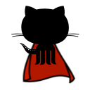

GitHub with a cape
x
Hey there!
Be sure to enable all the options you'd like to use and save the changes.
Show outdated diff comments by default
Highlights the outdated diff icon (the
X
) on PRs
Show the current diff name on the sticky header
Add collapsable diffs
Show All / Hide All buttons
Add collapsable commits
Toggle contributions by clicking the added/deleted stats
Resizeable splitted diffs
Notifications modal.
Get token
please select
notifications
in the checkboxes
Go to line number modal
Save changes
help
x
Options saved!
You may need to reload your GitHub tabs to see the changes.